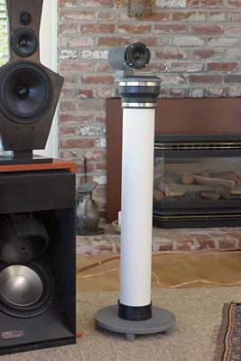
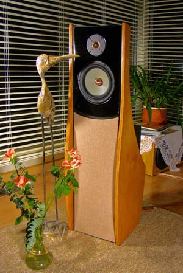
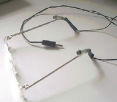
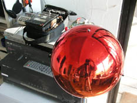
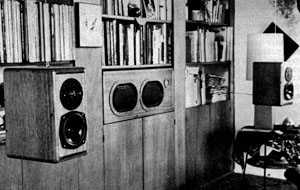

| What's new |
|
Basics |
|
Projects |
| Resources |
| ------------------ Digital Photo Processes |
| ------------------ The Sea Ranch |
| ------------------ My Daughter the Jeweler |
| What's new |
| 20
December 2017
Please note: I no longer sell directly any of my previously offered software or hardware products. I have retired. Construction plans for LINKWITZ LAB designs, parts kits and turnkey loudspeaker systems are available from www.magicLX521.com Construction plans for LINKWITZ LAB designs and
parts kits are also available from The Construction plans are required license to
purchase parts kits and assembled systems. The OPLUG Forum is the place for advice and help Have fun! |
|
The LX family of active and DSP or ASP controlledelectro-acoustic transducersfor rendering realistic sound scenesin a wide range of rooms
Here are four loudspeaker systems, which are designed to
deliver The Magic in 2-Channel Sound
I consider each one of the four systems as state-of-the-art for rendering a convincing stereo illusion, that touches one's emotions, that is analytically revealing of flaws in the recording, yet at the same time forgiving them, if the art comes through. I therefore recommend building these speakers not only to the DIY community, but also to professional recording/mixing/mastering engineers and especially to the designers of consumer products to hear for themselves what they have been missing. Hopefully these designs inspire a fresh look at what is possible in terms of believable 3D from two speakers before everyone launches off into 3D over headphones with their unnatural distance distortion. For further details about these speaker systems, about ordering plans, construction materials, miniDSP and amplifiers, start with the LXmini, LXmini+2, LXstudio or LX521 page.
>>> My current setup <<<
... Have Fun ... Create Memories ...***************************************************************** |
<<<<<< 2014 and earlier >>>>>>
15 Years of www.linkwitzlab.comA Retrospective |
|  |
LXmini...
|
LX521 - Reference LoudspeakerFew people have ever heard the detailed 3D rendering and realism that the stereo format is capable of when the loudspeakers are designed to illuminate the room evenly for all sounds and are properly set up in the room. The LX521 Reference Loudspeaker is an open-baffle, constant directivity radiator for the enjoyment of any type of music in the home and also for final judgment of work in the recording studio. The LX521 is designed to minimize the influence of the listening room upon the stereo image, which is formed in the listener's mind. The loudspeakers themselves disappear from aural perception, leaving in front of you a phantom acoustic scene to enjoy and study, and not just from the "sweet spot". Ultimately you are likely to get lost in the music. That is what I experience with a good recording. Most of my involvement with audio was about designing and building loudspeakers for my own use, for my own home. I have tried to push the state of the art, because I was never quite satisfied with commercial products, or could not afford what I liked at the time. I also discovered that even the best professional loudspeaker designers had unanswered questions and that I was not alone in my search. My education in electrical engineering, my work in electronic test equipment design and in microwaves had given me a good opening for designing broadband acoustic radiators that cover a range of wavelengths, which is equivalent to the range from 20 MHz to 20 GHz in electromagnetic terms. I have developed a deep appreciation of how the brain constructs an aural scene from the multiplicity of superimposed sound streams, which impinge upon each eardrum all the time. The brain's working suggests how to design a loudspeaker so that it can withdraw attention from the loudspeaker as the source of sound and the listening room as the real place, thus leaving an aural scene, an illusion floating in front of the listener. |
Sound
as close to Live -
|
ORION-3.4 LoudspeakersIn 2002 I put out the challenge to build yourself a high performance open-baffle loudspeaker system with electronic crossover/equalizer and multiple power amplifiers. The ORION incorporated what I had learned from designing loudspeakers for Audio Artistry and the follow-on PHOENIX. Soon after, Don Naples from Wood Artistry joined to supply precut wood parts and then complete, custom finished ORION systems. Today you can find hundreds of delighted ORION owners all over the world. The loudspeaker's design changed somewhat over
the years. The midrange driver was mounted by its magnet. A rear tweeter was
added. The frequency response was tweaked after hearing the first PLUTO. Don
Barringer, a trained musician and former recording engineer with the US Marine
Band, helped me in this process with many hours of listening. I am not touching
the design anymore. The ORION has reached its full potential.
|
 ORION with optional THOR subwoofers in back |
PLUTO-2.1PLUTO came about in 2005 after I had used its AURA tweeter as a small loudspeaker for low frequency room mode studies in a 10:1 scale model of my listening room. The tweeter opened the possibility of building a fairly decent omni-directional loudspeaker. I needed it as a reference source for studying baffle diffraction effects of the ORION. PLUTO evolved to the 2-way full-range loudspeaker that it is today when SEAS supplied me with a custom woofer/midrange driver. The loudspeaker is now ideally suited for smaller living spaces or as a lower cost alternative to ORION in larger rooms. PLUTO delivers great sound to hundreds of audiophiles worldwide, following ORION's example. PLUTO-2.1 is a great father-son/daughter DIY project. The speaker has built-in power amplifiers, hooks up to the iPod or laptop and is easily moved. It provides an introduction to high quality sound.
|
PHOENIXI launched this website in 1999 after I had separated from Audio Artistry. I left behind three proud design accomplishments: Vivaldi, Dvorak and Beethoven, all open-baffle loudspeakers. Much had been learned about loudspeaker design with passive and active crossover/equalizers. It added to what I had gathered from my audio hobby activities with other engineers at Hewlett-Packard Co. Especially Russ Riley, Lyman Miller and Brian Elliott had inspired me. So on leaving AA I wanted to write it all down, that it might benefit others and not get lost. The PHOENIX project was meant to be an illustrative exercise for others to judge the validity of what I was claiming. A study of the material will give you useful insight into the theory, design and construction of an open-baffle speaker, the necessary line-level crossover/equalizer and electronic filters. For the later ORION design I combined the separate dipole woofer with midrange and tweeter in a single cabinet. I also avoided the MTM driver arrangement. |
PHOENIX main panel and |
|   |
Recording, RenderingIf you want to learn about the theory behind stereo, about what it takes to create a phantom acoustic scene between two loudspeakers in your living room, then read Stereo Recording and Rendering - 101.
|
Publications, Talks, Links, CD'sTo get a taste of the large number of considerations that enter into the design of a loudspeaker you might read a ground breaking "Loudspeaker System Design" article. It was published 1978 in Wireless World magazine and describes a three-enclosure loudspeaker with active delay and crossovers using drivers that were highly regarded at the time, KEF T27, B110 and B139. |
|  | |
|
And then listen to a talk given 30 years later about accurate sound reproduction from two loudspeakers in a living room, to hear and see what more has been learned. Or see my take on loudspeakers in 2013. On the Links and Other designs pages you will find relevant and interesting material. It will show you that there is still much to learn about the optimum configuration of loudspeaker, room, setup and recording in order to create a "realistic sound illusion". I offer recordings of useful test signals for room analysis and sound tracks to evaluate your loudspeakers. Look at the Site map to orient yourself when searching for specific information. Check out the ORION/PLUTO/LX521 User Group for the exchange of ideas, for questions about LX521, ORION and PLUTO and to make contact with owners. |
|
www.LinkwitzLab.comYou have come to a website with a wealth of useful and practical information about loudspeaker design, electro-acoustic system design and about perception of sound from loudspeakers in normal rooms. I have been active in this field for over 40 years, motivated by my love for music and by a keen interest in the difficulties of reproducing music realistically in the home. After retiring from Hewlett-Packard Co. (now 'Agilent') with 37 years in R&D of radio-frequency and microwave electronic test equipment, I pursued my investigation of the loudspeaker-room-listener interaction with refreshed energy and time. In the late nineties I had developed the Beethoven/Dvorak/Vivaldi line of open-baffle loudspeakers for Audio Artistry. My objective has always been the development of cost effective loudspeaker systems for two-channel sound playback of the highest accuracy. Occasionally I experiment with surround sound. Video sound and moving pictures are of low interest to me, but digital photography has rekindled my lifelong fascination with pictorial expression. On this site you will find the essence of what I have learned from designing, building and listening to many different types of speakers. Fortunately, I was rarely bound by commercial considerations or restricted by market expectations. I was free to search for the parameters that are truly important to realistic reproduction. Throughout this search, my sonic reference has always been the non-amplified original performance. My motto has always been to be "true to the original, as it was recorded". I want to reproduce a recording without adding or subtracting from it either because of the loudspeakers or the room. The recording then defines the possible realism of the auditory scene. On this website you find information that allows you to build, to purchase, or to design loudspeakers which exemplify the pursuit of realistic rendering.
CAUTION: The content of any page may change without notice as I learn new things or find better descriptions. The designs presented here may change as I make new observations or gain more insight. Audio has overwhelmingly been a hobby for me, for my own pleasure and love of music. I enjoy to share what I found and possibly to dispel a few misconceptions. My interest is not on the business side, though I like that my activities pay for my hobbies. You may not agree with some or all aspects of my designs, the approach that I take to them, or the theories. I have no problem with that. Just do not ask me "what would happen if ...". Changes that you make to the designs are for your own pleasure and at your own risk. But if you learn something worthwhile, then please let me know. My DIY projects are not for beginners and it may be necessary for you to buy subassemblies or a turnkey system. Please do not ask me for individual help with your DIY difficulties. All my designs have a Support Page. It is listed on the cover or inside your project documentation. There is an ORION/PLUTO/LX521 Users Group with people who can help you. I respond to every email eventually, but you may not get the answer you want. I consider my writings in these web pages as brief and to the point. I labor over every sentence and word and provide little redundancy. I am not a native English speaker. I grew up in Germany. Read thoroughly and maybe more than once. I do not write for the rank beginner, but for those who have been around the block. You may need to study up. The links in my text are for that. I have not been standing still since I started this website in 1999 with the idea of a brain dump of my previous findings so they would not get lost to the audio community. In 2006, after PLUTO, I thought I would go into a support and maintenance mode. No new design. Stuff happened, more work to be done on radiation patterns. Also the recording and rendering process interested me. Therefore the LX521. It brings to completion my search for the prototype of an ideal stereo loudspeaker. It has confirmed theories and observations of how we hear in reverberant spaces The auditory illusion is convincing. I am satisfied. It's time to enjoy the sublime magic of sound and space! - January, 2014
|
From where and in what numbers do visitors come to this website?
Top 25 countries in a 7.5 month period from June 2013 to January 2014 with a total of 63,734 visits (283/day):
| By number of visits | Rank | By
number of visits / population |
| United States Germany United Kingdom Canada Australia Sweden Netherlands France Russian Federation Norway Poland Italy Denmark Switzerland Finland Japan China Brazil New Zealand India Serbia Spain Belgium Singapore Croatia |
1 2 3 4 5 6 7 8 9 10 11 12 13 14 15 16 17 18 19 20 21 22 23 24 25 |
Norway Sweden Denmark Finland New Zealand Netherlands Switzerland Australia Canada Croatia Singapore United States Serbia Slovakia United Kingdom Germany Belgium Austria Hungary Greece Czech Republic Poland France Italy Russian Federation |
For current data click on the world map below

|